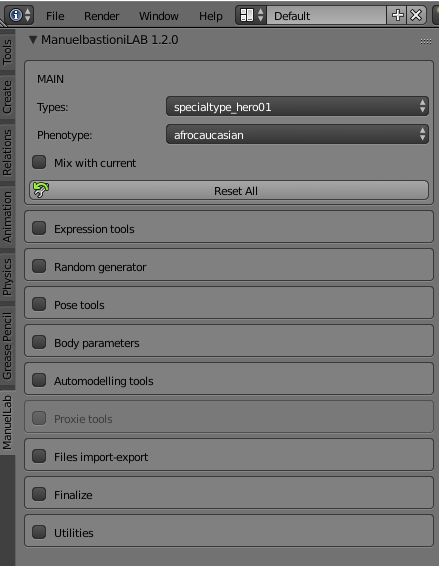
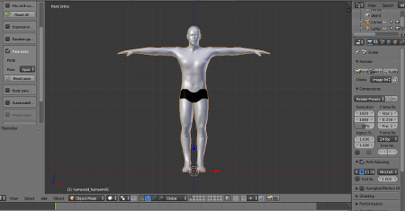
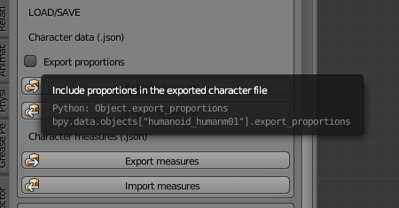

Release notes for ManuelBastioniLAB 1.2.0
New features
ManuelBastioniLAB 1.2.0 (download here) introduces two fundamental new features: the auto-modelling for body and the measure system.

The auto-modelling is an innovative way to create characters starting from a 3d draft. The user just provides a very rough model of what he has in mind, and the system automatically turns it in a realistic and coherent character. More info is available in the manual page and a quick video introduction is present on the official youtube channel.

The measure system is the long waited feature, as requested by ergonomic designers, anthropologists and fashion designers. Now the artist can easily create a character just giving the body measures.
Currently the supported measures are 33 "classic" dimensions, as used in the most of anthropometric studies and researches.

More info are available in the manual page and a quick video introduction is present on the youtube official channel.

New GUI
Version 1.2 also includes the new GUI, designed in order to increase the usability and optimize the screen space.
- The tools are grouped in collapsible tabs, in order to expand only what is needed during the modelling.
- Some tools are renamed in order to be more intuitive and easy to remember.
- The precision of body parameters is increased up to three decimals.
- The body parameters now have a "reset all" button.
- The option "fit skeleton" is removed from the GUI (now it's always enabled).

New modifiers in body parameters
- Hands_Lenght
- Shoulders_SizeX2
- Chest_Girth
- Chest_SizeX
- Chest_SizeY
- Chest_SizeZ
- Legs_UpperThighGirth
- Legs_LowerThighGirth
- Feet_SizeY
- Arms_UpperarmGirth
- Feet_SizeX
- Feet_SizeZ
- Feet_HeelWidth
- Torso_BellyPosZ
- Chest_SizeX
- Legs_CalfGirth
- Pelvis_Girth
Poses
- Added T-pose for male characters
- Added the "meditation" pose
- Added the "basic sit" pose

New export formats and option
The measures can be imported and exported as json files, as explained here.

The "Export character" data panel has a new option "Export proportions" to export the character as new item for automodelling database.
Code improvements
- Cleaned and partial refactory of morph engine
- Increased morphing speed (about 200%!)
- Handled the case of non writing permission for temp user folder
- Optimized libraries database with unique folder to avoid redundant files
Bug fixes
- Fixed normals update
- Fixed a bug in BreastPosX
- Fixed a modelling bug in male heel
- Fixed the clavicle proportion in male model
- Improved legs bone weights